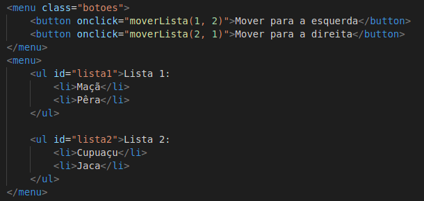

Hoje entederemos melhor o que é o DOM, suas características e funcionalidades:
- O que é DOM?
- O que são os objetos "window" e "document"?
- Diferença de "getElementById", "getElementsByClassName", "querySelector", "querySelectorAll"
- O que é um "Element" no JavaScript?
- Diferença de "innerHTML", "innerText" e "textContent"
- Qual a diferença entre uma "NodeList" e uma array comum? Como transformar a "NodeList" em uma array?
- Como criar elementos via JavaScript com "document.createElement" e "element.appendChild"
O que é DOM?
DOM significa "Document Object Model", em uma tradução livre seria algo como "Modelo de Objeto de
Documento", mas o que isso significa?
Resumidamente é uma forma do Java Script receber uma informação do HTML e conseguir trabalhar com ela, ou
seja, o Java Script que, a princípio, seria incapaz de manipular qualquer elemento do HTML agora pode
fazê-lo através do DOM.
Podemos averiguar isso a partir da imagem abaixo:
- Aqui temos a estrura HTML do menu principal desta apresentação
- Já aqui temos a criação de uma constante global "MENU" que recebe como valor a tag "main" do documento
HTML
A partir disso, podemos usar "MENU" no Java Script para, dinamicamente, manipular o próprio "main", tags que
estejam dentro dele, ou até mesmo alterar seu estilo.
Exemplo:
Considere os seguintes códigos:
- Aqui temos a criação da constante "BODY" que armazena a tag "body" do HTML desta apresentação seguida do seu uso dentro da função "trocarCorDeFundo(escuro, claro)" que tem por objetivo alternar a cor de fundo do "body" sempre que acionada:
- Já aqui temos a estrutura HTML do botão mais abaixo que incorpora a função descrita acima passando como parâmetro 2 cores pré-definidas por ele próprio.
Com isso podemos atestar uma das utilidades do DOM.
O que são os objetos "window" e "document"?
Agora que entendemos um pouco melhor o conceito básico de DOM podemos seguir para a definição de "Window" e
"Document".
- Document:
- Retomando o exemplo anterior, vimos que "MENU" está armazenando a tag "main" para futura manipulação no
Java
Script.
- Sendo assim, ("main") representa a tag selecionada em si;
- Já "QuerySelector" é, como o próprio nome sugere, o seletor que busca a tag ou classe, mas isso trataremos
nos próximos tópicos;
- Por fim temos "document" que é a representação do documento HTML inteiro dentro do Java Script.
Ou seja, toda vez que chamamos "document" dentro do Java, estamos em última instância fazendo uma busca em
todo o HTML ao qual o Script está relacionado.
- Window:
Enquanto "Document" representa o HTML em si, "Window" representa a janela a qual o usuário está acessando o
conteúdo. Um dos comandos mais comuns e que usaremos de exemplo do uso de "Window" é o "window.scrollTo(x,
y)" o qual scrolla a tela de exibição diretamente para o valor de "x" na horizontal e para o valor de "y" na
vertical. Considere as imagens abaixo:
- Aqui temos a função que ao ser ativada, deve scrollar a tela do navegador diretamente até a altura de 1000 pixels:
- Já aqui temos o botão que chamará a função ao ser clicado:
- Agora clique no botão abaixo para testar
GIT GUD!
Diferença de "getElementById", "getElementsByClassName", "querySelector", "querySelectorAll"
Esses comandos são seletores e servem (como o nome sugere) para selecionar qual ou quais elementos do HTML
serão selecionados para manipulação pelo Java Script.
Além disso, é necessário compreender que esses seletores resgatam "nodes" a partir do HTML, mas isso veremos
nos próximos tópicos, por enquanto concentremos nos seletores.
- "querySelector(" ")":
Resumidamente ele busca a primeira tag ou classe descrita dentro do (" ") sendo que classes precisam ser
precedidas de ponto para que possam ser buscadas.
Vejamos o seguinte exemplo:
- Aqui vemos a lista de Artigos dessa apresentação
- Agora tentemos usar os seguitnes comandos no console do browser:
Como pudemos observar, apesar de haverem 7 articles, o ARTIGO_0 armazenou apenas o primeiro article. No
entanto, se precisássemos armazenar todos os articles precisaríamos do próximo comando ->
- "querySelectorAll(" ")":
Basicamente é a mesma coisa que o "querySelector" com a diferença que ele não seleciona apenas a primeira
tag ou classe e sim todas com o mesmo nome, vejamos o exemplo:
- Mais uma vez vamos ao console testar os seguintes comandos:
Como podemons observar, a constante "ARTIGOS" está armazenando todos os "articles" presentes no HTML de
forma semelhante a um array, porém NÃO É UM ARRAY e portanto não pode receber alguns comandos exclusivos de
arrays como as HOF.
Além disso, é possível selecionar um dos elementos específicos ou iterá-los de forma semelhante a um array
adicionando [índice] ao final de "ARTIGOS".
- "getElementById(" ")":
É praticamente a mesma coisa do "querySelector" com a diferença sendo que ao invés de selecionar a primeira
tag ou classe escolhida, ela seleciona a primeira "id" escolhida.
- "getElementsByClassName(" ")":
Por fim, temos o "getElementsByClassName(" ")" que seleciona os elementos HTML que tem as classes
específicas escolhidas. Vejamos os exemplos para uma melhor compreensão:
- Aqui, o parâmetro escolhido foi a classe "escondido", por isso a constante "ESCONDIDOS" recebeu uma
HTMLCollection (um objeto com cada propriedade sendo um dos elementos selecionados e sendo cada um enumerado
de forma semelhante a um array).
- Repare que "ESCONDIDOS" funciona de forma parecida com os arrays e nodes, porém (assim como os nodes) não
pode receber comandos específicos de arrays como as HOF, mas ainda pode ser iterada com [índice] assim como
os nodes.
- Já no exemplo abaixo, vemos que a constante "ESCONDIDO_0" armazenou apenas um article como objeto de um
HTMLCollection, isso ocorreu pois apenas um article específico possuia as 2 classes que foram dadas como
parâmetros. No caso "escondido" e "artigo-0".
O que é um "Element" no JavaScript?
"Elements" (ou elementos) são como chamamos os elementos do HTML que buscamos através dos seletores
explicados anteriormente.
Retomemos alguns exemplos anteriores para melhor compreensão:
- Aqui podemos ver que o article armazenado em "ARTIGO_0" é o elemento.
- Já aqui temos como elementos os 7 articles dentro do nodelist armazenado em "ARTIGOS".
Diferença de "innerHTML", "innerText" e "textContent"
Agora que entendemos melhor sobre os seletores, "Elements", "window" e "document" podemos avançar para os
conceitos de "innerHTML", "innerText" e "textContent".
Tratam-se de propriedades que podemos usar dos elementos para manipulá-los diretamente na estrutura HTML
como adicionar, substituir ou apagar tags internas da estrutura desse elemento por exemplo.
Vejamos o exemplo a seguir:
Esse elemento tem espaçamento extra e contém um elemento span.
- Abaixo está a estrutura HTML da linha de cima:
- Clique nos botões para retornar na tela as propriedades Inner to exemplo acima:
Com isso podemos entender que:
- "innerHTML":
Retorna toda a estrutura interna do elemento, incluindo tags. Ele serve principalmente para adicionar,
remover ou alterar tags internas do elemento através do Java Script.
- "innerText":
Retorna apenas o conteúdo textual interno do elemento, ignorando tags e espaçamentos. Serve principalmente
para adicionar, remover ou alterar os textos internos do elemento através do Java Script.
- "textContent":
Semelhante ao "innerText" com a diferença considerar espaçamentos extras.
Qual a diferença entre uma "NodeList" e uma array comum? Como transformar a "NodeList" em uma array?
Como vimos em tópicos anteriores, o comando "querySelectorAll(" ") retorna uma nodelist que funciona de
forma parecida com um array, inclusive podendo-se utilizar [índice] para acessar tags ou classes
específicas. No entanto (apesar de funcionar como um array) a nodelist não é um, ou seja, não pode receber
métodos de array como "valueOf( )", "push( )", "pop( )", ou "join( )".
Por tanto, a nodelist apenas pode resgatar seus elementos e "length", mas não editá-los. Porém podemos
armazenar cada um dos elementos de uma nodelist dentro de um array.
Consideremos o exemplo a seguir:
- Aqui temos o array "LISTA_ARTIGOS" recebendo em cada [índice] um dos 7 articles.
Com isso, podemos utilizar "LISTA_ARTIGOS" no lugar de "document.querySelectorAll(" ")", uma vez que por
"LISTA_ARTIGOS" ser um array ele pode receber mais edições como remoção ou adição de elementos do array com
comandos como "pop( )", "push( )" respectivamente.
Como criar elementos via JavaScript com "document.createElement" e "element.appendChild"
Além dos métodos mais comuns descritos anteriormente para manipulação da estrutura HTML de um documento,
temos 2 outros métodos bastante úteis que são o "document.createElement("tag")" e o
"element.appendChild("variável")".
- "document.createElement("tag")"
O "document.createElement("tag")" cria uma tag HTML, normalmente se armazena esse comando numa variável para
uso e manipulação posterior em conjunto com o "element.appendChild("variável")", mas isso veremos em
exemplos posteriores.
É importante destacar que para uma melhor visualização é interessante alterar o innerHTML, innerText ou
textContent da variável que está armazenando a tag.
- "element.appendChild("variável")"
Já o "element.appendChild("variável")" por sua vez é utilizado como parâmentro de algum seletor para
adicionar a "variável" (que foi obtida pelo "document.createElement("tag")") ao "document.seletor(" ")" como
um childNode.
Em outras palavras, ele funciona de forma análoga ao comando "array.push(" ")".
Exemplo 1:
Considere as seguintes imagens:
- Aqui temos a estrutura HTML do exemplo mais abaixo:

- Aqui está a estrutura da função referenciada nos botões:
Lista 1:
- Maçã
- Pêra
Lista 2:
- Cupuaçu
- Jaca
Exemplo 2:
Considere o seguinte:
- Aqui temos a estrutura HTML do exemplo mais abaixo:
- Aqui está a estrutura da função referenciada nos botões: